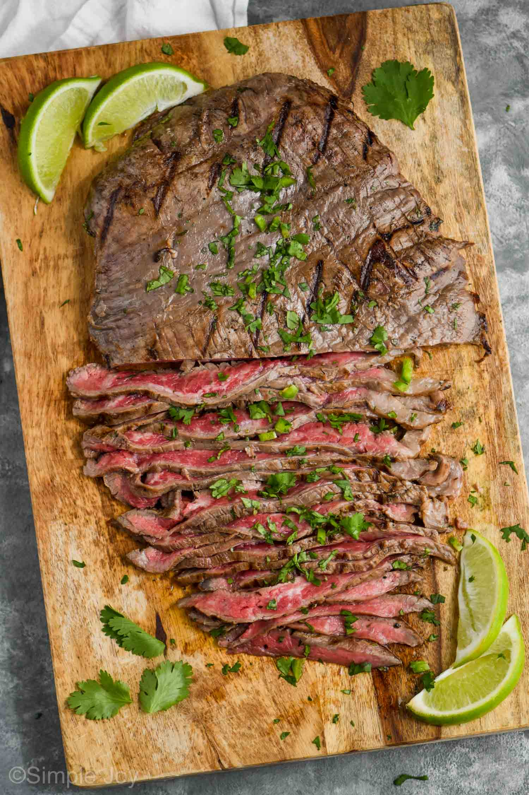

Home

Carne Asada
One of my favorite foods is Carne Asada, This tasty meat can be expensive but ohhh man is it
so worth it!
Carne Asada gets a lot of its flavor from the cut of the meat however one thing that makes
this cut shine is the seasoning. Personally Salt & Pepper is all you need but
at the end of the day to each their own.
Ingredients
- Orange juice
- Lemon juice
- Lime juice
- Soy Sauce
- Cilantro
- Garlic
- Chili Powder
- Cumin
- Paprika
- Pepper
- Oregano
- Chipotle Pepper
- Olive Oil
Steps
- Combine all ingredients into a bowl. Reserve 1 cup of marinage for use after the steak
is cooked.
- Pound steak and let sit in marinade for >24 hours
- After your steak has marinated, pop it on preheated grill and cook to your
preferred doneness. About 5 minutes on each side will yeild a medium-rare steak.
Pour the reserved marinade over the steak and serve.